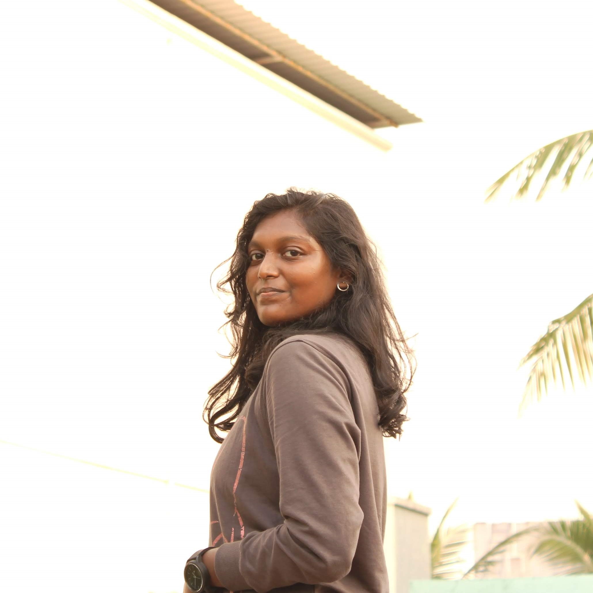

Joseline Breeya J

AI/ML Intern | Aspiring Web Developer | Python & Java Learner | Photographer | Design Enthusiast | Physics Graduate | Merging Science, Tech, and Creativity on an exciting journey
Summary
Greetings! 🌟
✨ Welcome to my LinkedIn profile! I'm an individual who thrives on infusing passion into every facet of life, work, and challenges. I embrace new experiences with genuine enthusiasm and contribute a dynamic spirit to all my endeavors. 🤝
🎓 I recently achieved a milestone by graduating with a BSc in Physics from the prestigious Women's Christian College in Chennai. 👩💻Currently, I'm immersing myself in the dynamic world of Artificial Intelligence as an AI/ML Intern at an innovative startup. 💻 This journey involves a deep dive into coding prowess, primarily in Python and Java, alongside an exploration of the intriguing realm of web development. 🚀
📸 Beyond my technical pursuits, I have a passion for photography and enjoy capturing fleeting moments. 📷 I've also been learning tools like Figma and Photoshop to express my creativity, driven by a keen interest in design. 🎨
🔗 One thing that characterizes me is my adaptability. I'm always eager to learn, and I've developed a range of skills, from analytical thinking to organizational abilities. 💪My commitment to achieving excellence keeps me motivated to continually push my boundaries. ⚙️
👥 Colleagues from workshops describe me as 'energetic, well-organized, professional, and composed.' 🤝 Family and friends highlight my 'honesty, reliability, and open-minded approach.' 👐
Excited to embrace the convergence of technology and creativity on my journey! 🌐
Thank you for taking the time to explore my profile. Looking forward to connecting and exploring the potential ahead!! 🚀
#AI #MachineLearning #WebDevelopment #Design #Photography 🤖📷
Work Experience
AI/ML Intern
June 2023 - Present
- @ Pureform Dynamics Pvt. Ltd.
- Description:
🚀 About Me:
Greetings! I'm an AI/ML Intern at Pureform Dynamics, driving innovation with AI and ML. Excited to reshape industries through data-driven insights.
🔍 My Focus:
I'm currently:
- Exploring advanced machine learning for pattern discovery.
- Collaborating on AI solutions for real-world challenges.
- Visualizing insights for impactful communication.
🌟 Tech Enthusiast:
Passionate about AI's potential to redefine industries. Committed to constant learning and growth in this evolving landscape.
- skills:
- Artificial Intelligence
- Machine Learning
Photographer
2020 - Present
- Freelance
- Description:
🌄 Sky & Beyond: Capturing the dynamic allure of the sky, from dawn's embrace to twilight's enchantment.
🌿 Nature's Poetry: Framing the elegance of nature, each shot reveals the beauty woven into our world.
☀️ Golden Hour Magic: Bathing in sunlight's glow, I capture the spellbinding charm of the golden hours.
🌙 Moonlit Whispers: Unveiling the moon's mysteries through nocturnal photography, each phase tells a tale.
🔍 Hidden Stories: Discovering the extraordinary in the mundane, my lens reveals unseen narratives.
🎨 Artistic Fusion: Infusing imagination with technique, I craft visual stories using Photoshop and Canva.
- Skills:
- photography
- Editing
- Adobe Tools
Education
- Bsc Physics
- @ Women's Christian College, Chennai
- Skills
- Photography
- Physics
- Sports
- NSS
- HSC
- @ AVM School, Chennai
- Skills
- Representative
- Javelin
- Volleyball
- SSLC
- @ AVM School, Chennai
- Skills
- Representative
- Javelin
- Volleyball
Skills
- AI
- Python Basic
- Java Basic
- Aspiring Web Development
- MS Office
- Photography
- Editing
- Adobe Tools
Contact Details
📞 +91 99******33
✉️ joselinebreeya@gmail.com
📍 Chennai, Tamilnadu, India
"Passion for Pixels, Dedication to Code, Stories Captured and Created!"